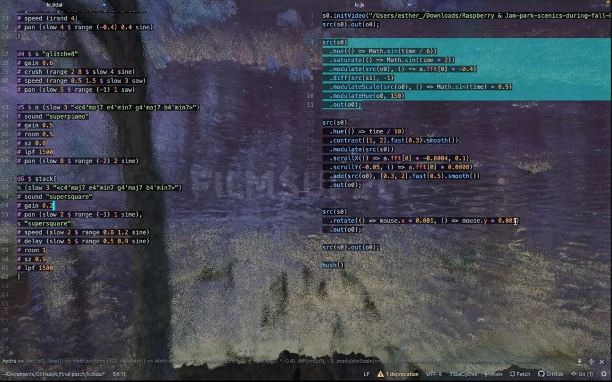

Esther Dong
Musician | Jazz Composer
Esther Dong is a half-Chinese and half-Korean jazz composer, multi-instrumentalist, and sound artist. Currently studying Jazz Composition at Berklee College of Music in Boston, USA. At the same time, she has been studying jazz Erhu performance under Grammy-nominated jazz violinist Sara Caswell. She has had the privilege of performing with Grammy-winning musicians such as Edward Perez, Mike Block, and Wu Man. Her performances have been recognized by Marcus Printup, a trumpeter from Jazz at Lincoln Center.
She is also passionate about bridging music and technology, she encourages human creativity by exploring new possibilities in sound. She enjoys live coding for music and visual arts.
In her free time, she enjoys running, cycling, surfing(riding the real waves), reading, and writing.
Recent Projects
- Esther Dong Quartet Recital
- Jazz Composition
- Live performance with Grammy-winning artist Mike Block
- The Silk Road - Chinese instruments and mixed ensemble
-

Click the image to check out the project
-

Check out more works on the streaming platforms links above
Contact
estherdong7@gmail.com
Feel free to reach out for collaborations or inquiries via email or social media links above.